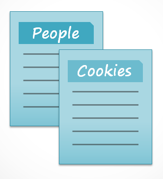
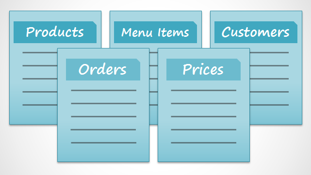
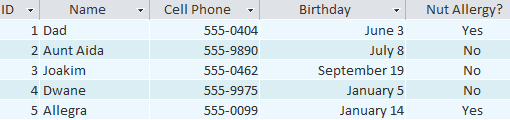
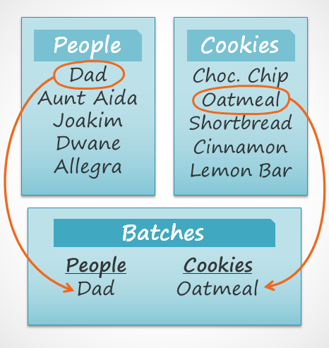

Microsoft Access este un program de creare și gestionare a bazelor de date. Pentru a înțelege Access, trebuie mai întâi să înțelegeți bazele de date.
În această lecție, veți afla despre bazele de date și despre modul în care sunt utilizate. Vă veți familiariza cu diferențele dintre gestionarea datelor în Microsoft Access și Microsoft Excel. În cele din urmă, veți vedea în continuare restul tutorialului Access.
Ce este o bază de date?O bază de date este o colecție de date care este stocată într-un sistem informatic. Bazele de date permit utilizatorilor lor să introducă, să acceseze și să analizeze datele lor rapid și ușor. Sunt un instrument atât de util încât le vezi tot timpul. Ați așteptat vreodată cât recepționerul unui medic a introdus informațiile dvs. personale într-un computer sau ați urmărit un angajat al magazinului folosind un computer pentru a vedea dacă un articol era în stoc? Dacă da, atunci ați văzut o bază de date în acțiune.
Cel mai simplu mod de a înțelege o bază de date este să ne gândim la ea ca la o colecție de liste. Gândiți-vă la una dintre bazele de date pe care le-am menționat mai sus: baza de date cu informații despre pacienți la un cabinet medical. Ce liste sunt conținute într-o bază de date ca aceasta? Pentru început, există o listă cu numele pacienților. Apoi există o listă de întâlniri anterioare, o listă cu istoricul medical pentru fiecare pacient, o listă de informații de contact și așa mai departe.
Acest lucru este valabil pentru toate bazele de date, de la cele mai simple la cele mai complexe. Dacă vă place să coaceți, de exemplu, puteți decide să păstrați o bază de date care să conțină tipurile de cookie-uri pe care știți să le faceți și prietenii cărora le oferiți aceste cookie-uri. Aceasta este una dintre cele mai simple baze de date imaginabile. Conține două liste: o listă cu prietenii tăi și o listă cu cookie-uri.

Cu toate acestea, dacă ai fi un brutar profesionist, ai avea multe mai multe liste pe care să le ții evidența: o listă de clienți, produse vândute, prețuri, comenzi și așa mai departe. Cu cât adăugați mai multe liste, cu atât baza de date va fi mai complexă.

În Access, listele sunt puțin mai complexe decât cele pe care le scrii pe hârtie. Access își stochează listele de date în tabele, care vă permit să stocați informații și mai detaliate. În tabelul de mai jos, Lista de persoane din baza de date a brutarului amator a fost extinsă pentru a include și alte informații relevante despre prietenii brutarului.

Dacă sunteți familiarizat cu alte programe din suita Microsoft Office, acest lucru vă poate aminti de Excel, care vă permite să organizați datele într-un mod similar. De fapt, puteți construi un tabel similar în Excel.
De ce să folosiți o bază de date?Dacă o bază de date este în esență o colecție de liste stocate în tabele și puteți construi tabele în Excel, de ce aveți nevoie de o bază de date reală în primul rând? În timp ce Excel este excelent în stocarea și organizarea numerelor, Access este mult mai puternic în manipularea datelor nenumerice , cum ar fi numele și descrierile. Datele nenumerice joacă un rol semnificativ în aproape orice bază de date și este important să le poți sorta și analiza.
Ceea ce diferențiază cu adevărat bazele de date de orice alt mod de stocare a datelor este conectivitatea. Numim o bază de date precum cele cu care veți lucra în Access o bază de date relațională. O bază de date relațională este capabilă să înțeleagă modul în care listele și obiectele din ele se relaționează unele cu altele. Pentru a explora această idee, să revenim la baza de date simplă cu două liste: numele prietenilor tăi și tipurile de cookie-uri pe care știi să le faci. Decizi să creezi o a treia listă pentru a urmări loturile de cookie-uri pe care le faci și pentru cine sunt. Deoarece faci doar prăjituri pentru care știi rețeta și le vei oferi doar prietenilor tăi, această nouă listă va obține toate informațiile din listele pe care le-ai făcut mai devreme.

Vedeți cum a treia listă folosește cuvinte care au apărut în primele două liste? O bază de date este capabilă să înțeleagă că cookie-urile Dad și Oatmeal din lista Loturi sunt aceleași lucruri ca Dad și Oatmeal din primele două liste. Această relație pare evidentă și o persoană ar înțelege-o imediat; cu toate acestea, un registru de lucru Excel nu ar face acest lucru.
Excel ar trata toate aceste lucruri ca informații distincte și fără legătură. În Excel, ar trebui să introduceți fiecare informație despre o persoană sau un tip de cookie de fiecare dată când l-ați menționat, deoarece acea bază de date nu ar fi relațională ca o bază de date Access. Mai simplu spus, bazele de date relaționale pot recunoaște ceea ce poate un om: dacă aceleași cuvinte apar în mai multe liste, se referă la același lucru.
Faptul că bazele de date relaționale pot gestiona informații în acest fel vă permite să introduceți, să căutați și să analizați date în mai mult de un tabel simultan. Toate aceste lucruri ar fi dificil de realizat în Excel, dar în Access chiar și sarcinile complicate pot fi simplificate și ușor de utilizat.
Despre tutorialul Access La ce să vă așteptați de la acest tutorialAcest tutorial nu vă va învăța cum să construiți o bază de date de la zero. Este conceput pentru persoanele care intenționează să utilizeze o bază de date preexistentă, cel mai probabil la locul de muncă.
Tutorialul începe cu o introducere de bază în Access. Vă veți familiariza cu structura unei baze de date Access și veți învăța cum să navigați prin diferitele ferestre ale acesteia și prin obiectele conținute în ea. Pe măsură ce tutorialul continuă, veți învăța cum să introduceți informații în mai multe moduri. Veți învăța, de asemenea, cum să sortați, să preluați și să analizați aceste informații prin rularea de interogări. După ce înțelegeți cum să utilizați baza de date, veți primi instrumente care vă permit să îi modificați structura și aspectul.
Până când veți termina de citit acest tutorial, veți putea folosi cu încredere o bază de date. De asemenea, ar trebui să îl puteți modifica pentru a se potrivi cel mai bine nevoilor dvs.
Este acest tutorial potrivit pentru tine?Dacă ați citit descrierea și credeți că acest tutorial se potrivește nevoilor dvs., atunci mergeți mai departe și intrați. După cum am menționat mai sus, este conceput în primul rând pentru a învăța oamenii cum să folosească o bază de date existentă. Dar indiferent de obiectivul tău eventual, acesta îți poate oferi o bază solidă.
Dacă intenționați să creați un sistem pentru a ține evidența informațiilor personale, luați în considerare cu tărie dacă aveți nevoie de funcționalitatea completă a Access în baza de date. În timp ce Access este un instrument extrem de util, configurarea unei noi baze de date poate fi dificilă și consumatoare de timp. Dacă nu aveți neapărat nevoie de conectivitatea completă a unei baze de date relaționale, luați în considerare gestionarea informațiilor cu Excel.